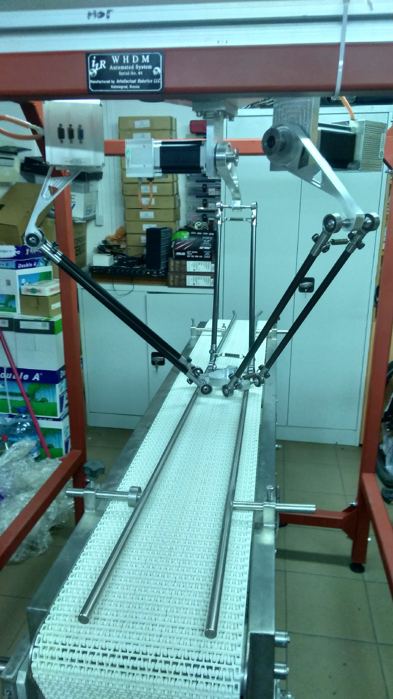

Продукция
Дельта-манипулятор ДР-1

Робот-манипулятор предназначен для задач:
1. Сортировки
2. Трамбовки
Количественные параметры:
1. Срок службы в рабочем режиме - не менее 30 000 часов
2. Выдерживает ускорения и удары по корпусу - не более 25 g
3. Точность распознавания объектов - не менее 98%
4. Количество степеней свободы - не менее 4
5. Точность позиционирования манипулятора - не хуже 1 см.
6. Поднимаемый манипулятором вес - не менее 2 кг.
7. Уровень шума - не более 60 дБ.
Цена по запросу.